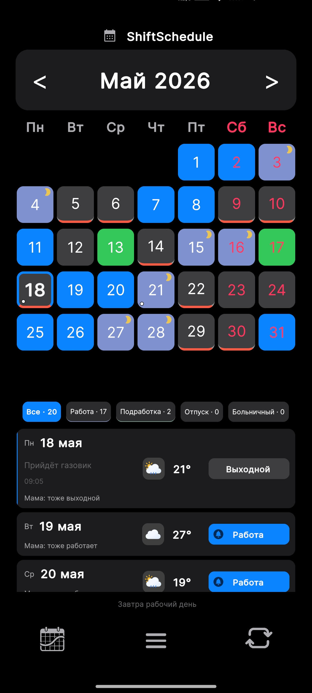
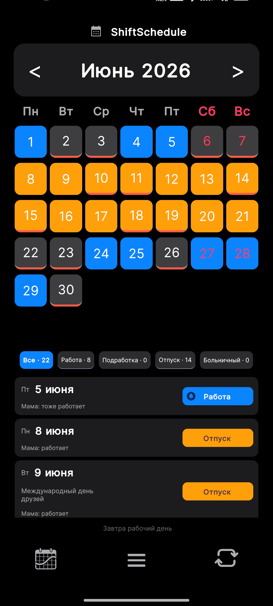
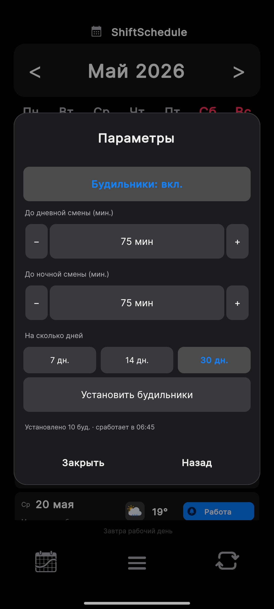
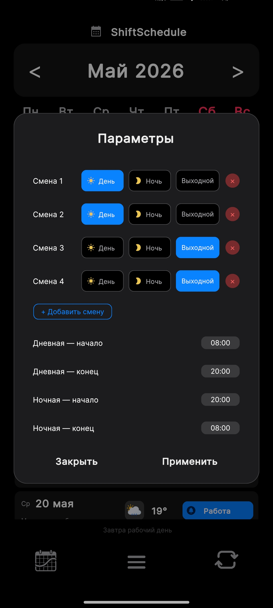
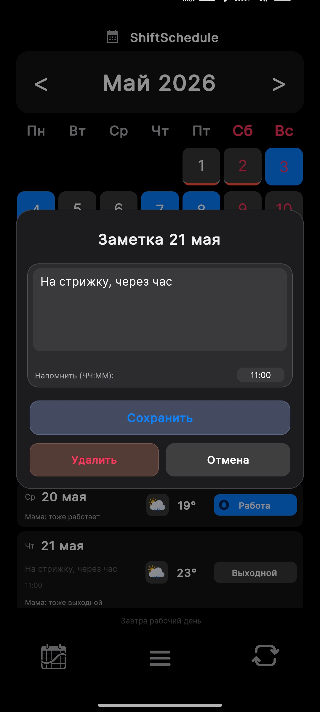
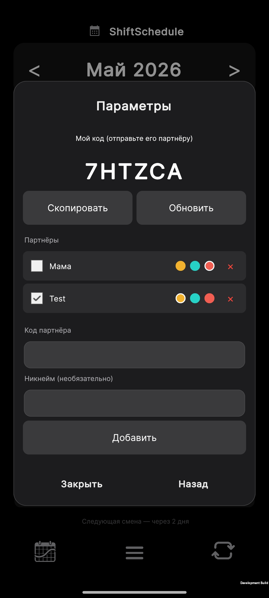
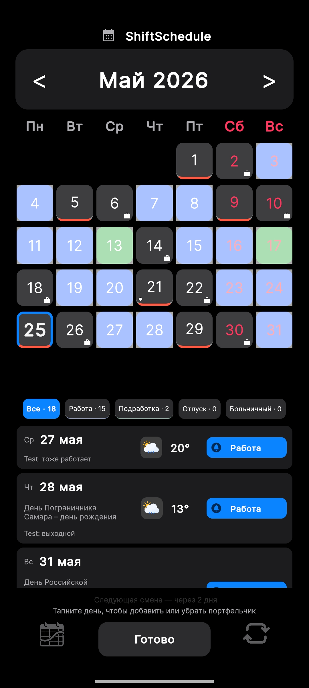

Я один разрабатываю Android-приложение. Без команды, без инвестора, без маркетолога. Просто я, ноутбук и идея, которая не давала покоя.
Началось даже не с идеи. Началось с рекламы.
У меня было похожее приложение для учёта смен. Обычное, с баннерами. И в какой-то момент я в очередной раз случайно ткнул в рекламу — и на меня вывалилось окно за окном. Закрыл телефон, подумал секунду и поймал себя на мысли: а почему бы не сделать своё?
Без рекламы. Без лишнего шума. И не просто "мой график", а чтобы можно было видеть, когда мы со второй половиной оба свободны.
Вот с этого всё и началось.
Март 2026 года. Я установил Unity, начал читать документацию, пробовать. Не знал, как нормально сохранять проекты — о системе контроля версий тогда почти не думал. И я угробил два проекта.
Оба раза одинаково: неделя работы после основной работы, ночами, когда все уже спят. Что-то придумал, реализовал, тестируешь — и в какой-то момент проект перестаёт компилироваться. Ошибка за ошибкой, непонятно откуда. Что делать — не знаю.
В итоге: удалить всё и начать с чистого листа.
Два раза по кругу. Третий проект — тот, что сейчас.
Когда в семье кто-то работает посменно, жизнь превращается в постоянную арифметику.
"Ты в эту субботу работаешь?"
"Подожди, дай посчитаю. Сегодня пятница, значит завтра... нет, подожди, мы же поменялись на той неделе..."
Особенно это заметно на графиках 2/2, 3/3, день/ночь или сутки через трое. На бумаге всё выглядит просто: рабочие дни, выходные, повторяющийся цикл. Но в реальности начинаются подработки, больничные, отпуска, переносы смен, вторая работа и попытки найти хотя бы один общий выходной.
Все существующие приложения обычно думают об одном пользователе: вот твой календарь смен, смотри.
Но у сменщика есть ещё и семья. Им тоже нужно планировать жизнь.
Мне нужно было знать не только когда я работаю. Мне нужно было знать, когда мы оба свободны.
Это маленькое, но принципиальное различие. Именно оно в итоге начало определять каждое решение в приложении.

Общие выходные в ShiftSchedule отмечаются прямо в календаре — не нужно вручную сравнивать два графика.
Первые месяцы я сам себе тестировщик. Обновление выходит — ставлю на свой телефон, хожу и ищу баги. Просил друзей на работе: "Поставь, посмотри, как у тебя выглядит".
У меня на экране всё красиво — у кого-то на другом телефоне разъезжается вёрстка. Приходишь домой, правишь, снова смотришь. Пользователей мало, обратной связи почти нет.
Это, пожалуй, самое сложное: делаешь в тишине и не всегда понимаешь, правильно ли идёшь.
Обновления выходят раз в неделю-две. Каждое — это несколько вечеров, найденные баги, исправленные косяки и один новый кусок того, что хочется в итоге.
Так приложение постепенно перестало быть просто календарём смен.
Появились заметки к дням, подработки, отпуск, больничный, второй график, будильники перед сменой, облачная синхронизация, вход через Яндекс, Google и почту. Потом добавился партнёрский режим, чтобы можно было видеть общие выходные. А позже — навык Алисы, чтобы можно было спросить голосом: "Работаю ли я завтра?"






Некоторые функции ShiftSchedule: отпуск в сменном графике, будильники, настройка день/ночь, заметки, партнёрский режим.
И вот тут я окончательно понял: сменный график — это не просто "рабочий день" и "выходной".
Это сон. Это семья. Это планы. Это дорога. Это подработки. Это отпуск, который хочется поставить так, чтобы не потерять лишние дни. Это вопрос "когда мы вообще можем куда-то поехать вместе?"
Обычный календарь показывает даты. Но он не всегда понимает жизнь человека, который работает по сменам.
Похожие приложения появляются, но идея у многих одна и та же — просто мой график. Я же продолжаю делать то, что изначально хотел видеть сам.
А хотел я с самого начала две вещи: вкладку "Вместе", где видно, когда вы оба свободны, и AI-помощника, который подскажет, когда лучше запланировать отпуск или совместный выходной.
Думал, сделаю быстро. Три месяца назад казалось, что это вопрос пары недель.
Сейчас вкладка "Вместе" наконец готова — тестирую её на своём телефоне. AI пока пустой экран с надписью "в разработке". До логического конца я всё ещё не дошёл.
Но каждый раз, когда кажется, что вот-вот финишная черта, я придумываю что-то новое. Что-то, чего ещё не было. Что-то, что хочется попробовать.
Наверное, это и есть главное. Не дойти до конца, а продолжать пилить. И получать от этого удовольствие.
Три месяца. Три старта. Один человек.
И одна мысль, которая не даёт остановиться.